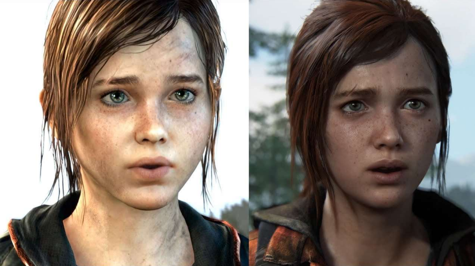

Luke Reilly
By Luke Reilly
You almost have to admire the hedonism of looking at The Last of Us Remastered, which is still visually impressive eight years later, and saying, “Yeah, that looks pretty good, but we can do better.” There’s very little left to be said about the original The Last of Us, a potent, postapocalyptic cocktail of stealth, survival, and slaughter that’s revered for its haunting storytelling in an amazingly well-crafted world. You almost certainly knew that. It’s widely lauded as one of the best games of all time and one of the few to get a 10 from IGN, but I reckon you knew that, too. In fact, it’s a game so nice they built it thrice, which is where we find ourselves with The Last of Us Part I – now the third version of Naughty Dog’s 2013 masterpiece to arrive inside a decade.
Unsurprisingly, this remake takes full advantage of the added grunt afforded to it by the PS5 by delivering astonishing new levels of detail and fluidity in its fully rebuilt world, characters, and animations. It's also equipped with some subtle but well-considered use of the haptic feedback in the DualSense controller, and a simply remarkable array of accessibility options. It’s missing the original’s multiplayer mode, but the result is undoubtedly the definitive way for solo players to experience this modern classic. Even so, there is something inherently inessential about it that it can’t quite shake, as a remake of an already fabulous remaster that remains a must-play on hardware only a single generation old.
Make no mistake: the story here in both the main game and the short prequel, Left Behind (which is included in Part I, still as a separate story), remains as strong, as captivating, and as shocking as it ever was. If you’ve yet to play it, The Last of Us is a tangled bramble of themes, but Naughty Dog weaves them together expertly. It may trade in despair, selfishness, and misery, but it’s also quick to lightly breathe on the embers of hope, redemption, and love that glow within its darkness. The upshot is an unforgettable journey that I still can’t recommend highly enough.
It may trade in despair, selfishness, and misery, but it’s also quick to lightly breathe on the embers of hope, redemption, and love that glow within its darkness.
Listo f Titles in The Last of US Series:
| Title | Year | Platform |
| The Last of Us | 2013 | Playstation 3 |
| The Last of Us Remaster | 2014 | Playstation 4 |
| The Last of Us Part II | 2020 | Playstation 4 |
| The Last of Us Part I | 2022 | Playstation 5 |